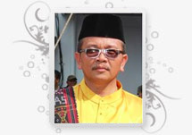
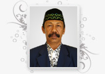

Drs. Istu Handono
NIP. 19641229198903 1 011
Selamat Datang di Website SMAN 9 Pekanbaru
Media Sistem Informasi Akademik Online SMAN 9 Pekanbaru
Kami Menyambut baik terbitnya Website SMAN 9 Pekanbaru yang baru , dengan harapan dipublikasinya website ini sekolah berharap : Peningkatan layanan pendidikan kepada siswa, orangtua, dan masyarakat pada umumnya semakin meningkat. Sebaliknya orangtua dapat mengakses informasi tentang kegiatan akademik dan non akademik putra - puterinya di sekolah ini. Dengan fasilitas ini Siswa dapat mengakses berbagai informasi pembelajaran dan informasi akademik.BERITA TERBARU

Senin, 28 Mei 2012 - 08:12:00 WIB
Wabup Buka Pembekalan Anti Korupsi 70 PPTK dan Pejabat Bengkalis
BENGKALIS- Sedikitnya sekitar 70 peserta dari Pejabat Pelaksana Teknis Kegiatan (PPTK) dan pejabat Eselon IV pada Satuan Kerja Perangkat Daerah (SKPD) di lingkungan Pemerintah Kabupaten Bengkalis mengikuit ... Selengkapnya (0 komentar)
Senin, 28 Mei 2012 - 08:12:00 WIB
16 Tim SMA se-Bengkalis Ikuti Bola Voli Wabup Cup 2012
BENGKALIS- Sedikitnya sekitar 70 peserta dari Pejabat Pelaksana Teknis Kegiatan (PPTK) dan pejabat Eselon IV pada Satuan Kerja Perangkat Daerah (SKPD) di lingkungan Pemerintah Kabupaten Bengkalis mengikuit ... Selengkapnya (0 komentar)
Senin, 28 Mei 2012 - 08:12:00 WIB
Wabup Bengkalis Buka Turnamen Sepakbola Bupati Cup 2012
BENGKALIS- Sedikitnya sekitar 70 peserta dari Pejabat Pelaksana Teknis Kegiatan (PPTK) dan pejabat Eselon IV pada Satuan Kerja Perangkat Daerah (SKPD) di lingkungan Pemerintah Kabupaten Bengkalis mengikuit ... Selengkapnya (0 komentar)KATALOG DOWNLOAD TERBARU
- Perizinan Bidang Tata Pemerintahan (81)
- Perizinan Bidang Perkebunan & Kehutanan (46)
- Perizinan Bidang Perhubungan Komunikasi & Informatika (179)
- Perizinan Bidang Cipta Karya Dan Tata Ruang (57)
- Perizinan Bidang Perindustrian & Pedagangan (87)

Drs. Kunto Hadi
NIP. 19641229198903 1 011